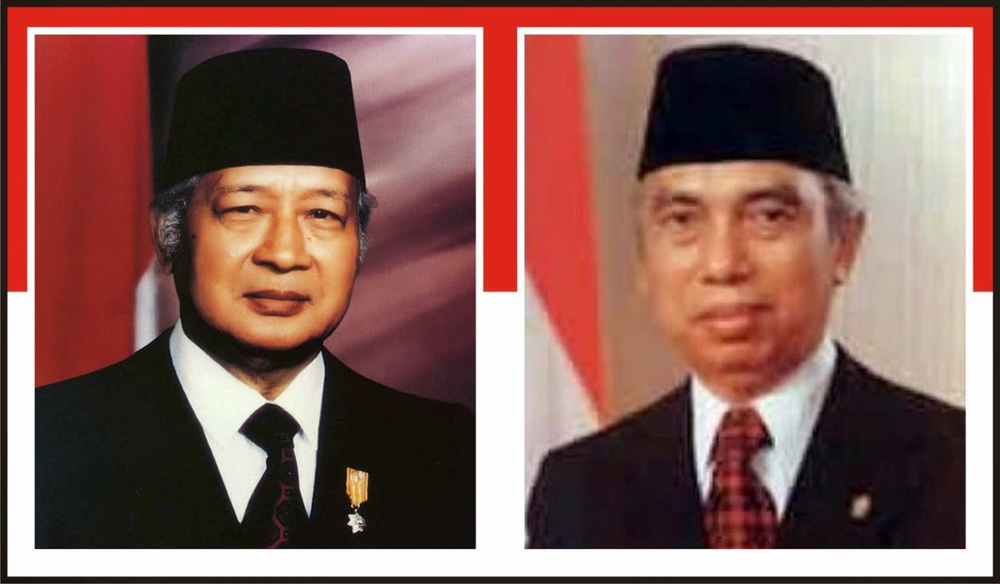
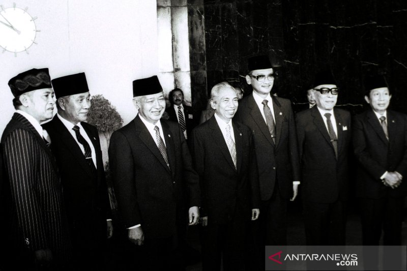

Kekurangan dan Kelebihan Masa Pemerintahan Soeharto
Kelebihan
- Stabilitas politik dan keamanan yang terjaga.
- Pertumbuhan ekonomi yang pesat di masa awal.
- Pembangunan infrastruktur dan swasembada beras.
- Peningkatan pendidikan dan kesehatan masyarakat.

Kekurangan
- Kebebasan berpendapat yang terbatas.
- Praktik korupsi, kolusi, dan nepotisme yang meluas.
- Ketergantungan ekonomi pada hutang luar negeri.
- Ketimpangan sosial yang mulai terasa.
